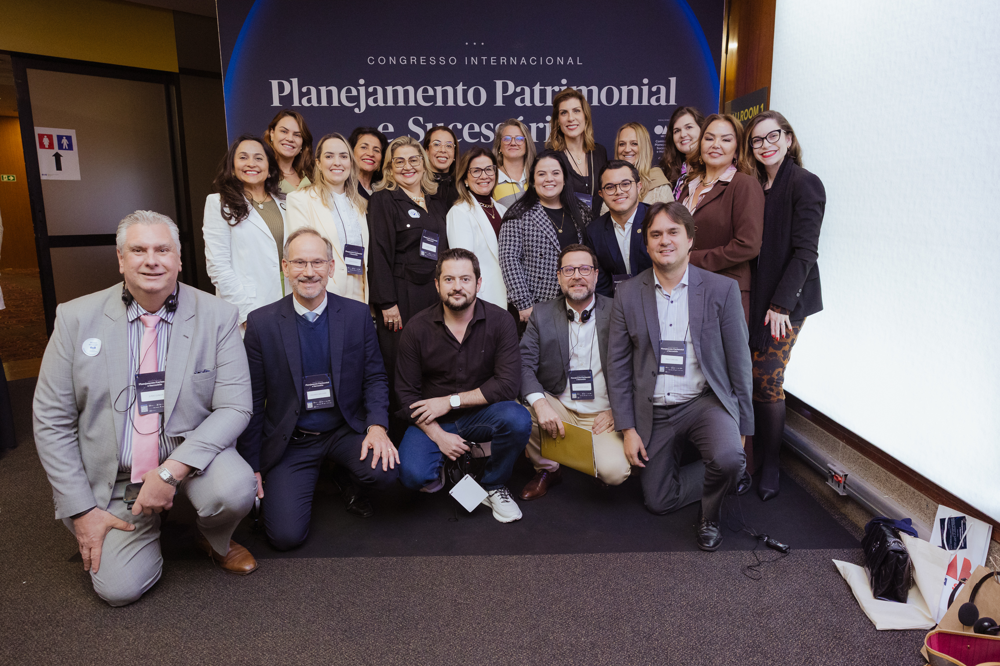
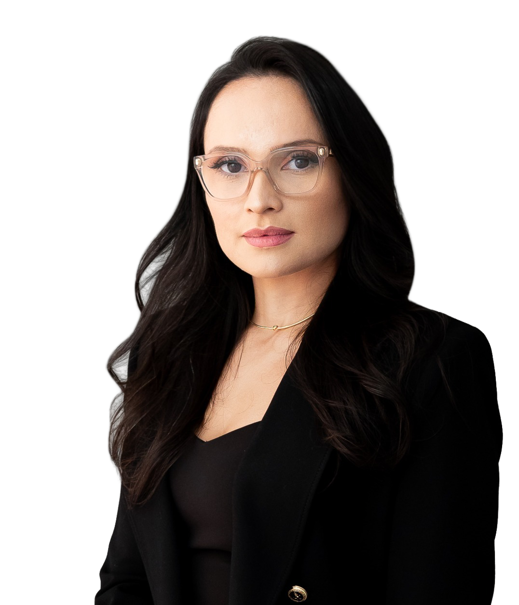
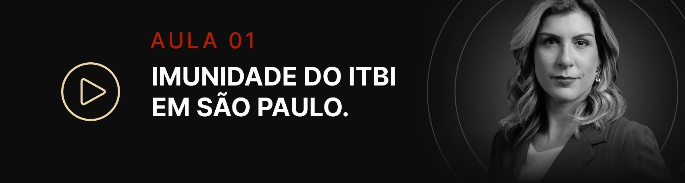
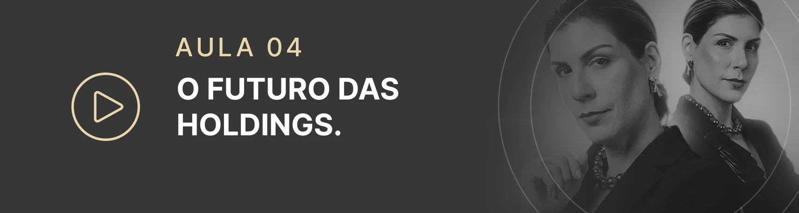

Tenha clareza para
tomar a decisão
certa em cada
planejamento
Com direcionamento de quem atua todos os dias no mercado.
Pare de ter
dúvidas
nos seus planejamentos e saiba exatamente qual decisão tomar em cada caso.
ATENÇÃO: ESSA MENTORIA NÃO É PARA INICIANTES
Na mentoria prática em PPS você vai:
Validar seus casos
Com a Dra. Mariana Arteiro.
Ter Clareza
Sobre o melhor caminho em cada estrutura.
Entender na Prática
O que está funcionando atualmente.
Estar no Ambiente
Com profissionais no mesmo nível.
Se você atua com PPS, provavelmente já passou por isso:
Ficar em dúvida entre duas ou mais estruturas possíveis
Não ter clareza sobre qual caminho é mais seguro em cenários complexos
Questionar se a decisão tomada foi realmente a melhor para o cliente
Sentir insegurança ao sustentar tecnicamente uma estratégia
Esse tipo de situação não se resolve com mais conteúdo teórico.
Se resolve com direcionamento prático.
Na mentoria, a Dra. Mariana analisa os seus casos, conduz o raciocínio técnico e mostra, com base na prática, qual é o melhor caminho a seguir em cada cenário.
Quero participar da próxima turmaMentoria Prática em PPS
A Mentoria Prática em PPS é um ambiente fechado, criado para profissionais que já atuam com PPS e querem segurança para evoluir.
Aqui, você participa:
Casos
Trazendo seus casos.
Estratégias
Discutindo novas estratégias.
Estruturas
Validando suas estruturas.
Tudo isso com o direcionamento da
Dra. Mariana Arteiro
Ao entrar na mentoria, você terá:
Encontros ao vivo
Discussões ao vivo com a Dra. Mariana Arteiro e convidados estrategicos
Apresentação de Casos
Espaço para apresentar seus próprios casos
Direcionamento
Direcionamento prático sobre o que fazer em cada situação
Comunidade exclusiva
Comunidade exclusiva com profissionais que atuam todos os dias com PPS
Acesso a Mentora
Acesso direto à Dra Mariana Arteiro para tirar dúvidas
Comunidade exclusiva
Ao ingressar na Mentoria prática em PPS, você passa a fazer parte de uma comunidade formada por profissionais que já atuam na área e enfrentam os mesmos desafios que você.

Essa mentoria é para você?
É para você que:
- Já atua com planejamento patrimonial ou sucessório
- Quer mais segurança nas suas decisões
- Busca direcionamento prático
- Quer evoluir no mercado com consistência
NÃO é para:
- Quem está começando do zero
- Quem busca apenas conteúdo teórico
- Quem não está disposto a aplicar
Conteúdos e recursos complementares
Encontros Bônus ao Vivo

Roberta Ramos
Family Office
Mestre em Direito. Advogada com certificação em Family Office. Professora de Direito Empresarial.
Luiz Couto
Investimentos financeiros no PPS
Advogado Público Concursado. Planejador Financeiro Certificado. Consultor de Valores Mobiliários.

Alessandro Meliso
Proteção patrimonial: técnicas de defesa no processo executivo
Ex-Juiz em Direito por mais de 21 anos. Mestre em Ciências Jurídicas. Responsável pedagógico na AVA Educação.
Aulas com especialistas do mercado
Encontros conduzidos por profissionais que atuam diretamente com PPS, compartilhando como estruturam e conduzem seus casos na prática.
Alessandro Meliso
Proteção patrimonial: técnicas de defesa no processo executivo
O Professor Alessandro Meliso foi Juiz de Direito por mais de 21 anos, é Mestre em Ciências Jurídicas pela Faculdade de Direito Universidade Clássica de Lisboa.

Felipe Esteves
Holding rural
Advogado especialista em contratos e planejamento tributário no agronegócio.

Isabella Paranaguá
Contratos de namoro e união estável
Conselheira federal da OAB. Presidente da Comissão Nacional de Sucessões do CFOAB. Pós-doutora pela Universidade de Birmingham.

Líbera Copetti
PPS no agronegócio
Professora. Mestre em Direito. Presidente da Comissão Nacional do Agronegócio do IBDFAM.

Juliana Guerra
O mapa dos conflitos societários aplicado ao PPS
Advogada há 15 anos, Mestre em Psicanálise e Práticas Sociais, com atuação em advocacia empresarial societária.

Pablo Arruda
O confronto entre os artigos 110 e 116 no CNT
Advogado e professor de Direito Empresarial há mais de 2 décadas.

Rodrigo Mazzei
Partilha em vida e seus efeitos para o PPS
Professor da UFES (graduação e PPGDir) e da FUCAPE Business School.

Hygoor Jorge
Ativos securitários
Professor da LLM em Direito Empresarial. Membro do IBEF. Mestrando em Contabilidade Tributária pela FUCAPE/RJ.

Frederico Bastos
Prática em Planejamento Internacional
Professor de Direito Tributário no Insper, Ibmec e FGV. Mestre pela FGV. Coordenador do OTT do Insper.
Curso PPS Business
Acesso ao conteúdo complementar para transformar sua atuação:
- Precificação de honorários e negociação na prática
- Gestão de fluxo de caixa e controle financeiro
- Marketing digital para advogados de PPS
- Como construir autoridade e atrair clientes
- Modelos de propostas comerciais e contratos
- Pitch de vendas e técnicas de fechamento
- Ferramentas de gestão e produtividade
Recursos Práticos
Acesso a modelos e ferramentas que facilitam sua execução:
- Base de legislações, jurisprudências e materiais de apoio
- Modelos de instrumentos de PPS (testamentos, holdings, trusts, etc.)
- Planilhas de simulação de tributos e custos de sucessão
- Checklists de atendimento ao cliente e coleta de dados
Aulas extras
Conteúdos complementares com temas atuais do PPS, trazendo visões práticas que ajudam a entender como decisões estão sendo tomadas no mercado.


Quem é sua mentora
Mariana Arteiro atua diretamente com Planejamento Patrimonial e Sucessório, lidando diariamente com estruturas, decisões estratégicas e desafios reais do mercado.
Sua experiência não vem apenas da teoria, mas da prática, acompanhando casos, analisando cenários complexos e orientando profissionais sobre o melhor caminho a seguir. É exatamente essa vivência que ela leva para dentro da mentoria.
Atualmente, Mariana preside a Comissão Especial de Planejamento Sucessório e Holdings da OAB/SP (2025/2027) e é Conselheira da OAB/SP (2022/2027), ocupando uma posição estratégica no cenário jurídico nacional.
Também foi idealizadora do maior Congresso de Planejamento Patrimonial e Sucessório do país (OAB/SP, 2023, 2024 e 2025), além de já ter ocupado cargos como Presidente da OAB Cotia e Diretora do IBDFAM Cotia.
Sua formação inclui MBA Internacional em Direito Empresarial pela Universidade da Califórnia (Irvine), pós-graduação em Planejamento Patrimonial e Sucessório (FGV Law) e especialização em Direito Tributário.
Hoje, Mariana é reconhecida pela capacidade de transformar conhecimento em direcionamento prático para profissionais que atuam no mercado.
Essa mentoria não é para todos
As vagas são limitadas e o acesso passa por uma avaliação de perfil. Nem todos que se candidatam são aprovados.
Por isso, se você quer garantir sua participação na próxima turma, faça sua aplicação agora.
Quero participar da próxima turmaFAQ
1. Esta mentoria é indicada para iniciantes? +
Não. A mentoria foi criada para profissionais que já possuem base em Planejamento Patrimonial e Sucessório e buscam mais segurança, clareza e direcionamento na prática. Se você ainda está começando do zero, este não é o ambiente mais indicado neste momento.
2. Preciso estar atuando em casos no momento para participar? +
Não necessariamente. Mas é importante que você já tenha base na área e interesse real em atuar com PPS. A mentoria é mais aproveitada por quem já está próximo da prática ou em fase de aplicação.
3. Como funciona a análise dos casos? +
Os mentorados trazem situações reais dos seus escritórios, e a Dra. Mariana analisa os casos ao vivo. Mais do que responder, ela conduz o raciocínio técnico, mostra os caminhos possíveis e orienta qual decisão faz mais sentido em cada cenário.
4. Como funciona o processo seletivo? +
O primeiro passo é o preenchimento da aplicação. Após a análise do perfil, os candidatos aprovados são convidados para uma conversa individual com a equipe. A mentoria possui vagas limitadas, e o objetivo do processo é garantir um grupo alinhado em nível técnico e momento profissional.
5. Como fico sabendo do valor da mentoria? +
O valor é apresentado durante a etapa de conversa individual. Essa etapa também serve para alinhar expectativas e garantir que a mentoria faça sentido para o seu momento profissional.
6. Os encontros ao vivo ficam gravados? +
Sim. Todos os encontros ao vivo ficam gravados e disponíveis na plataforma, com acesso liberado por 12 meses. Isso permite que você revise os conteúdos e acompanhe discussões importantes mesmo após as aulas.
7. Essa mentoria é exclusiva para advogados? +
Não. A mentoria é destinada a profissionais que já atuam com Planejamento Patrimonial e Sucessório ou que estejam inseridos nesse mercado. O mais importante não é a formação, mas o nível de atuação e o interesse real em evoluir na área.